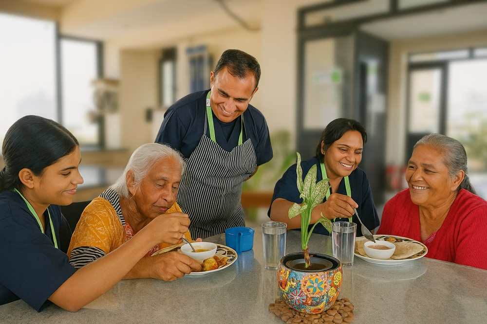

We believe daily living should feel peaceful, dignified, and effortless. Our Comfort, Dining & Housekeeping service ensures residents enjoy clean spaces, nourishing meals, and a relaxed living experience.
Every detail is managed with care — from freshly prepared meals to spotless rooms and thoughtful daily support.

Balanced meals prepared with senior-friendly nutrition, taste, and dietary preferences in mind.
Regular cleaning and upkeep of living spaces to maintain hygiene, comfort, and freshness.
Routine bedding changes, laundry coordination, and tidy personal spaces for resident comfort.
Warm service and attentive staff who make each day more comfortable and welcoming.
Let us help your loved one enjoy safe, clean, and joyful everyday living.